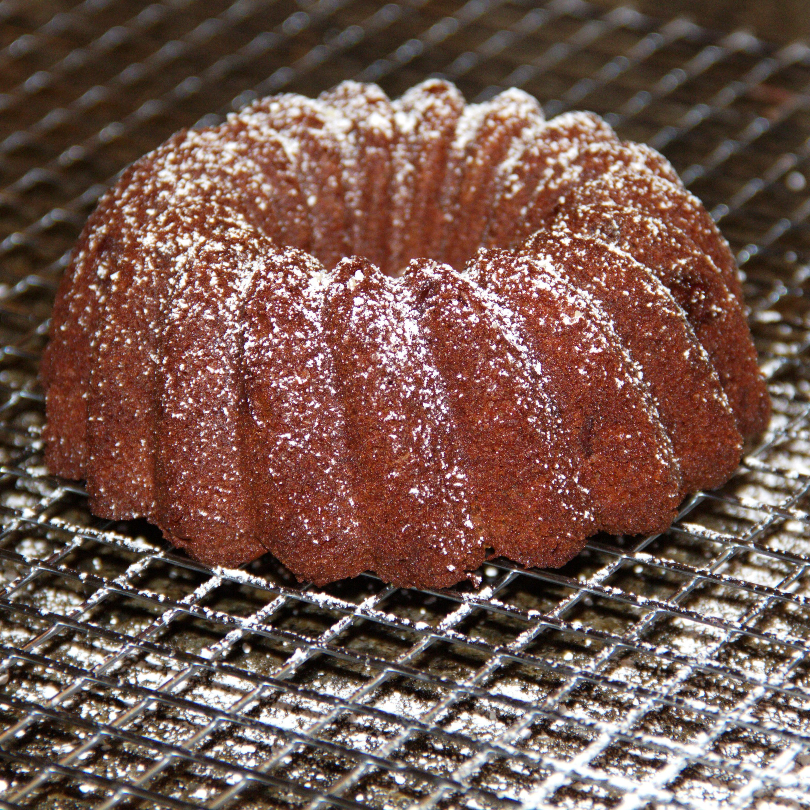

Chocolate Cake

Description
Aight, so this is a recipe I'm literally copying off of
internet for this coding assignment. Here's the description of the cake
by the og author: "This is a chocolate cake I make in my air fryer,
I like to use a ring tin as it makes the cooking time even shorter,
perfect for a couple or small family. Top with icing sugar"
Here's the link to the actual recipe: Actual Recipe
Ingredients
- cooking spray
- 1/4 cup white sugar
- 3 and 1/2 tablespoons butter, softened
- 1 egg
- 1 tablespoon apricot jam
- 6 tablespoons all-purpose flour
- 1 tablespoon unsweetened cocoa powder
- salt to taste
Steps
- Preheat an air fryer to 320 degrees F (160 degrees C). Spray a small fluted tube pan with cooking spray.
- Beat sugar and butter together in a bowl using an electric mixer until light and creamy. Add egg and jam; mix until combined. Sift in flour, cocoa powder, and salt; mix thoroughly. Pour batter into the prepared pan. Level the surface of the batter with the back of a spoon.
- Place pan in the air fryer basket. Cook until a toothpick inserted into the center of the cake comes out cleanly, about 15 minutes.